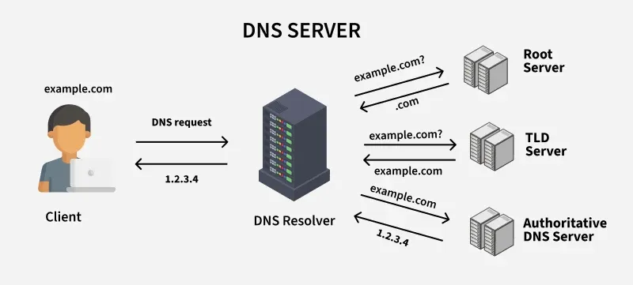

DNS (Domain Name System)

What is DNS?
The Domain Name System is the internet's phonebook. It translates human-friendly domain names into the IP addresses that computers use to communicate.
Why It Exists
- Computers locate each other using IP addresses like 142.250.80.46.
- Humans remember names, not numbers.
- DNS bridges that gap — you type google.com, DNS finds the IP.
How It Works
- You type a domain name into your browser.
- Your device asks a DNS server: "What is the IP for this name?"
- The DNS server looks it up and returns the correct IP address.
- Your browser connects to that IP and loads the website.
- This whole process takes milliseconds.
Key Terms
- DNS Server - A computer that stores domain name to IP address records.
- DNS Record - An entry that maps a domain to an IP address.
- DNS Cache - A saved list of recent lookups to speed up future requests.
- DNS Resolver - The first server your device contacts when doing a lookup.
Key Facts
- Created in 1983 to replace a manually updated text file.
- There are 13 sets of root DNS servers around the world.
- DNS can also be used to block harmful websites at a network level.